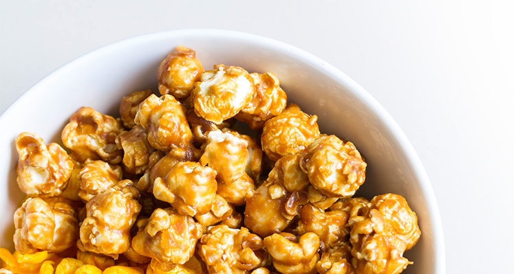

CARAMEL POPCORN

RESEP:
Popcorn
- 100 gram jagung pipil kering
- 4 sdm mentega/butter
Caramel Sauce
- 3 sdm gula pasir
- 1 sdm air
- 1 sdm mentega/butter
- 3 sdm susu cairfull cream
- Sejumput garam
|
CARA MEMBUAT:
- Masukkan mentega kedalam wajan hingga leleh kemudian masukkan jagung pipil kering sambil diaduk sebentar kemudian tutup wajan dan sesekali di aduk hingga jagung meletup dan berubah menjadi popcorn
- Siapkan kembali teflon dan nyalakan kompor dengan api kecil, lalu masukkan gula, kemudian tambahkan air (jangan diaduk hingga gula menjadi cair dengan sendirinya karena ini kunci membuat caramel sauce)
- Setelah itu tambahkan mentega, susu cair full cream, sejumput garam kemudian aduk dan masak hingga caramel sauce berwarna keemasan
- Masukkan popcorn kedalam teflon yang berisi caramel sauce kemudian aduk hingga merata
- Caramel popcorn siap disajikan!
|